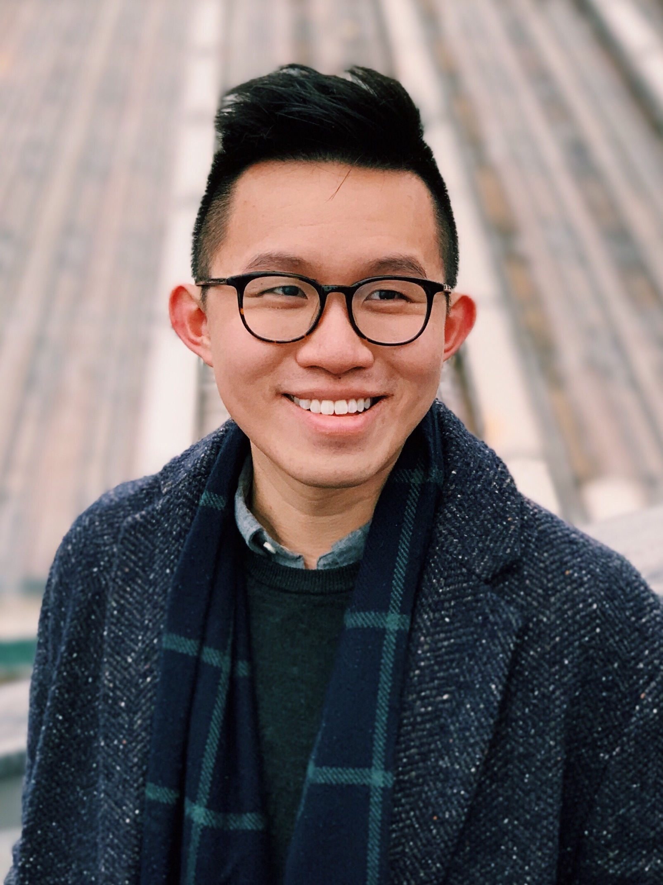

Samuel Chan is a musicologist and thinking partner with interests in sound studies, media anthropology, and Sinophone studies. He has presented on musical hatred, vocal failures, and digital circulation at Music Archive Finland, Amherst College, as well as the Universities of Michigan, Minnesota, and Hong Kong. Collaborating with Sarah Hankins, Suzanne Thorpe, and Juan David Rubio, he has organized Sonic Fluidities, a sound studies conference featuring keynotes by George Lewis, Clara Latham, Roshanak Kheshti, and David Kirsh. He is Associate Editor at SEM Student News and an admin at Decolonizing Ethnomusicology.
Chan is a PhD student and Henry MacCracken Fellow in Music at New York University. He received his MA in Music/Integrative Studies at UC San Diego with a thesis on the politics of musical aversion in contemporary Hong Kong. He received his BA in Music (First Class Honors) at the Chinese University of Hong Kong, where he was awarded the Bernard van Zuiden Music Prize for graduating top of class. His studies were fully supported by the Hong Kong SAR Government Scholarship, Hong Kong Jockey Club Music Scholarship, and Kunkle and Pommerenke Grand Scholarship.
Email: samuelchan@nyu.edu